国・地域の見分け方
- 車は左側通行
- ドメインは.nz
- ボラードの反射板が赤色。色がボラードの表裏に塗られているがオーストラリアのものは反射板が片方だけだったり丸い形だったりするので区別がつく(by plonk it )。
- GIVE WAYが黒い文字で書かれているならばオーストラリア、赤い文字ならばニュージーランド(by plonk it )。
- 電柱の上のほうにシルバーの何かが巻かれている。
見つかる標識
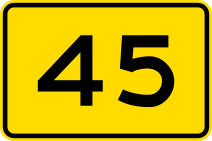
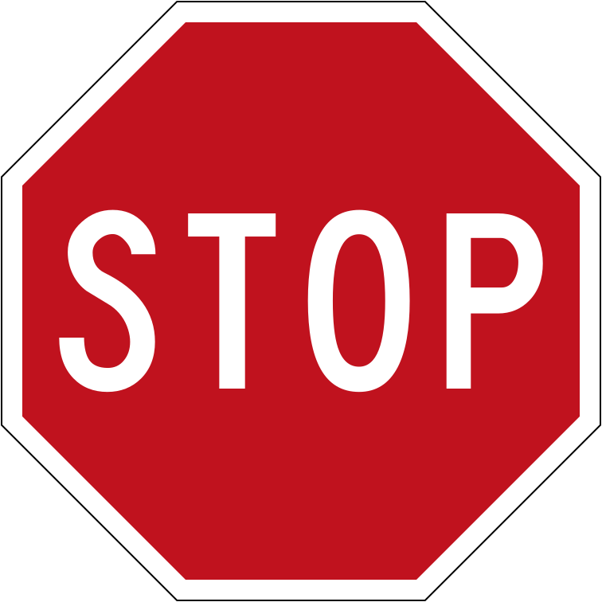

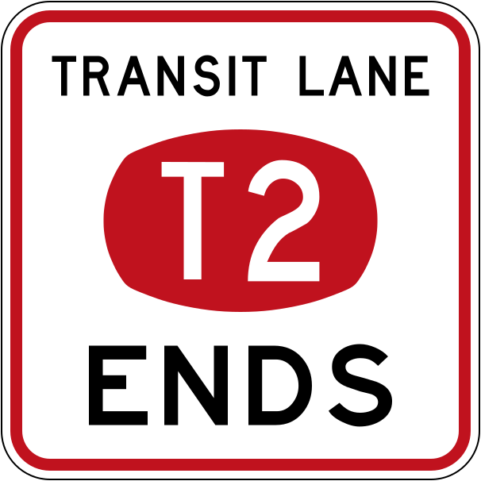
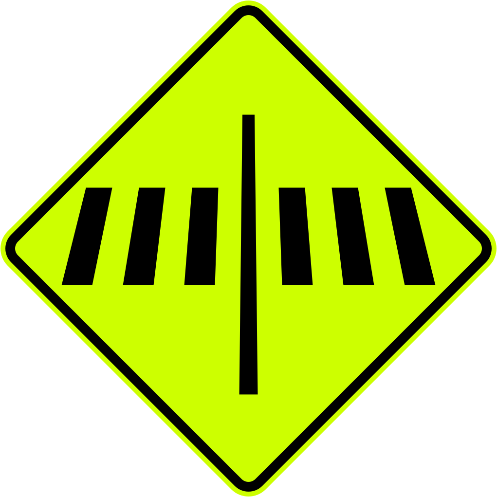
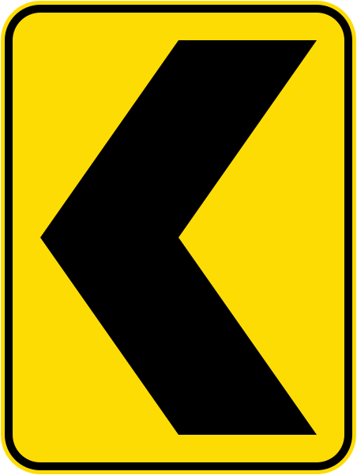

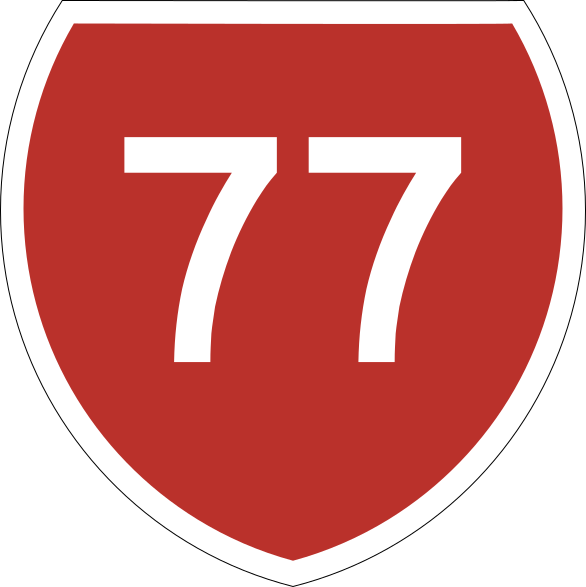
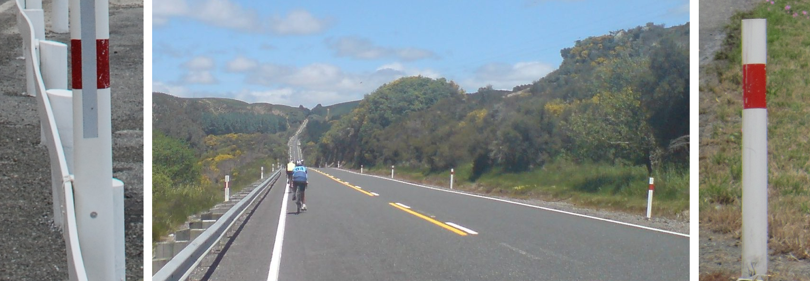
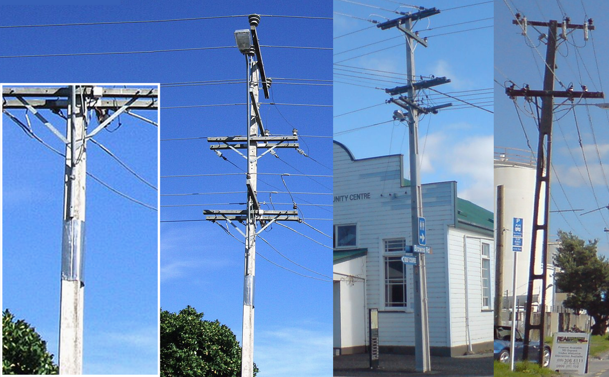


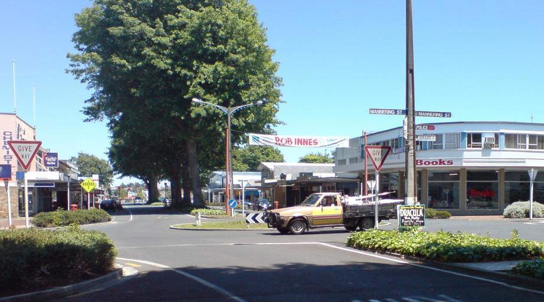
ニュージーランドは国土の40%以上が牧草地。雨が年中適度に降るため牧草が育ちやすい。そのため酪農家の生産コストが低く抑えられ、ニュージーランドの乳製品は世界的に競争力がある(参考文献 農畜産業振興機構 ニュージーランドの酪農事情)。
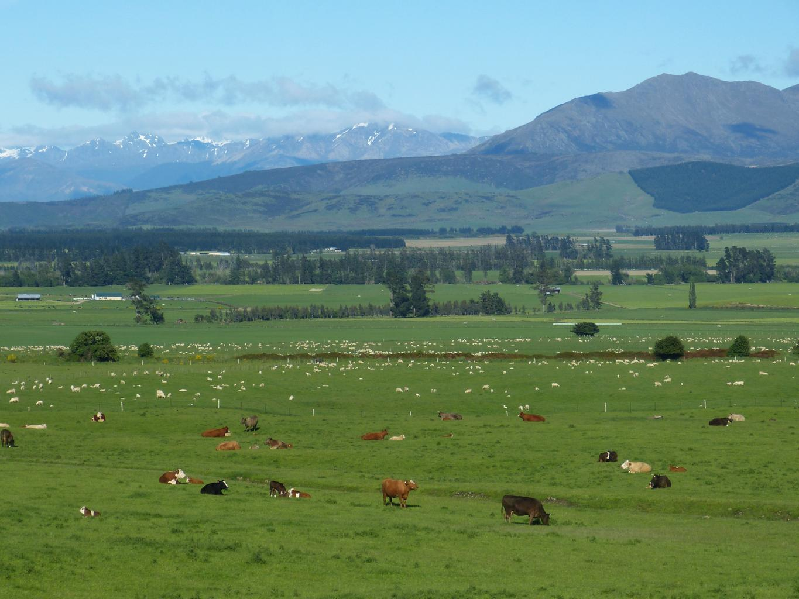
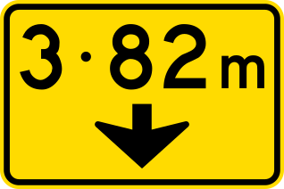
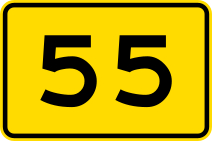
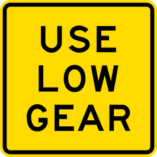
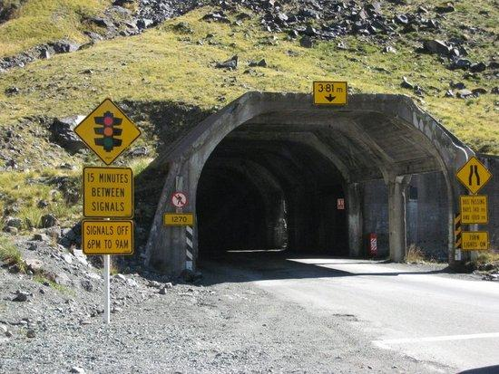
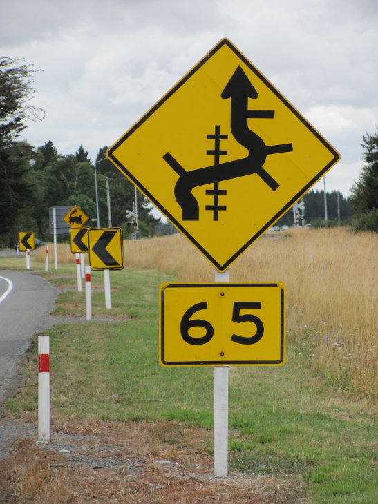
これは道路番号ではなく速度表記
電柱の例
州・地域の絞り込み
- 丘が平坦かどうか・雪の被った山が見えるかどうか・木の密度を見る(from 『【GeoGuessr攻略】ニュージーランド編！現地プロによる徹底解説Part1【翻訳】』)
- 画質が悪く砂利の道が多い場合はオークランドの北に行ってみる
- 雪山や木の電柱が多い場合は南の島を考えてみる
- 市外局番が北から南へと小さくなっていく
- 一番南のエリアは羊が多いが、これだけで確定することはできない(参考文献 ニュージーランドの牛肉生産事情～酪農産業の拡大による影響と今後の見通し～)
クライストチャーチを中心として全体的に平坦で高い防風林が多い(参考文献 カンタベリー大学)。

地中海周りに多い植物であり、北島の海沿いに生えていることが多い(参考文献 Arundo donax(inaturalist))。最南でクライストチャーチの海沿いに生えている。
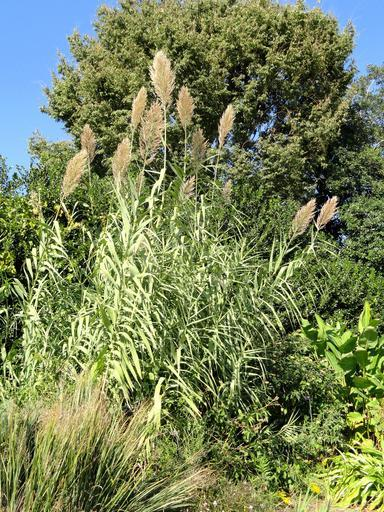
キウイ農園があるは北島か南島の最北端(参考文献 Kiwi Fruit Book 2021)。世界のおよそ4割のキウイはNZ産だ。
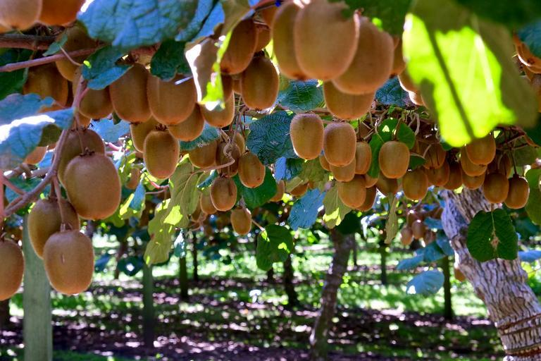
都市・町の絞り込み
- 富士山みたいな山が見えたら北島の南西の角にある国立公園周辺にいる(参考文献 タラナキ山)
- 南島にOtago Central Rail Trailと呼ばれる約150キロメートルのウォーキング・サイクリングロードがある(参考文献 Otago Central Rail Trail)。赤いバッグのようなものが見える。
富士山みたいな山が見えたら北島の南西の角にある国立公園周辺にいる(参考文献 タラナキ山)。
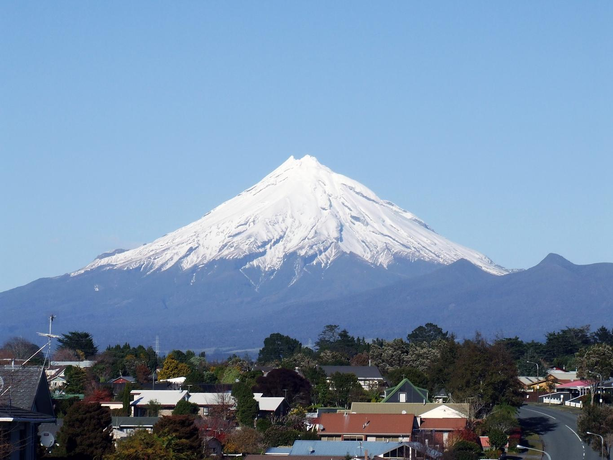
離島
- スチュアート島は人が住んでいる島の中では最も南。森に囲まれた入江がある(参考文献 スチュアート島)。
- ホワイト島という離島が北島の上にある
- アンティポディーズ諸島にはペンギンやオットセイがいる

硫黄生産跡地があるが火山による災害により放棄された(参考文献 ホワイト島)。現在は入ることができないらしい。
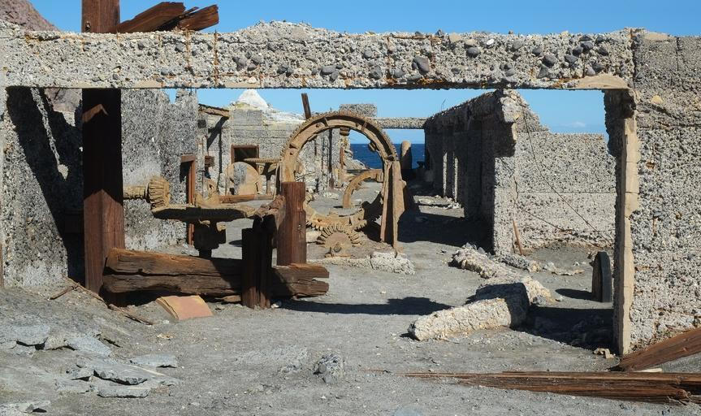
ペンギンのコロニーがある世界遺産。一般人は入ることができないエリア。
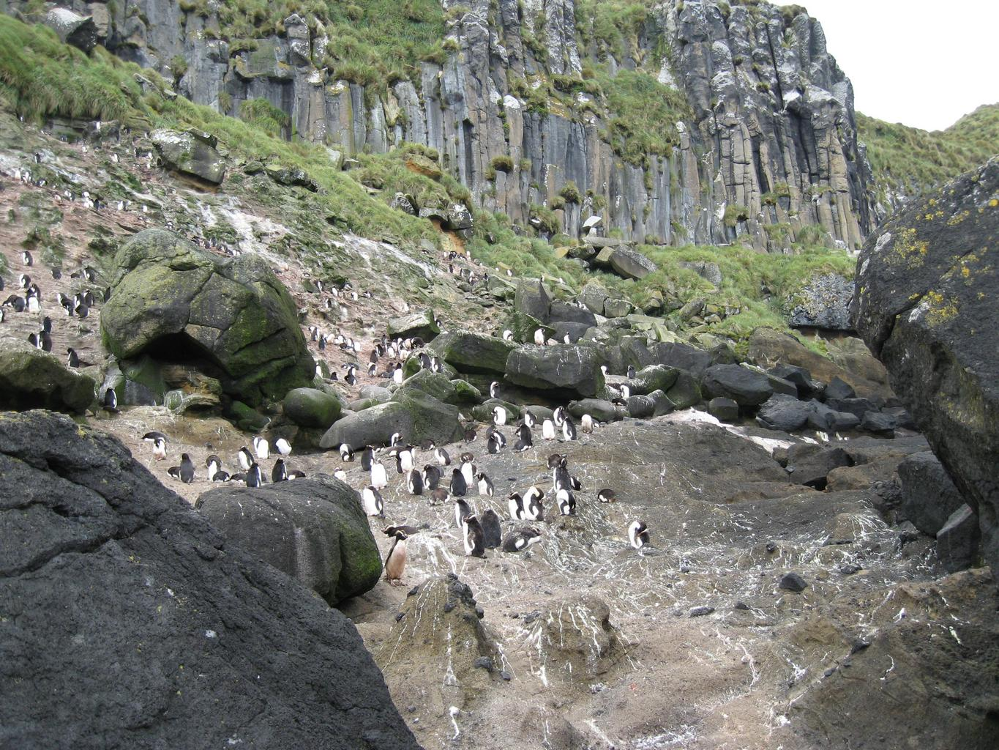
{{< amazon-links >}}